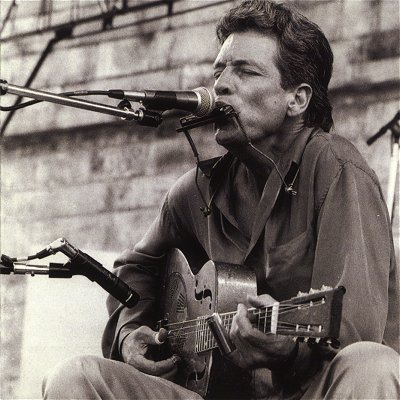

Джон Пол Хаммонд Третий родился 13 ноября 1942 года в городе Нью-Йорк, штат Нью-Йорк, США. Его отец - знаменитый продюсер джаз-, рок- и фолк-музыки на Columbia Records. Имя у них настолько известное, что происходит постоянная путаница, его отца зовут John Hammond Junior, но иногда так называют и Джона Пола.Младший Хаммонд не пошел по стопам отца, он решил сам стать исполнителем и выбрал для этого гитару, гармошку и блюз. В отличие от большинства его ровесников, он не стал писать песни сам, отказался от фолк-протеста и стал исполнять только чужие композиции. Ходят слухи, что он написал всего несколько песен за свою жизнь!
Джон начал играть и петь еще в школе, и уже в колледже он выступал в барах и кофейнях. Его стиль тогда - это акустический кантри блюз. Хаммонд играет на гитаре, и на шее у него держатель с гармошкой. Он очень умело играл одновременно на обоих инструментах, несмотря на сложность этого процесса.
В 1963 году Хаммонд подписывает контракт с Vanguard Records и выпускает на этом лейбле пять альбомов. На ранних он играет один, а вот уже на So Many Roads (1965) ему помогают The Hawks - позднее они стали знаменитыми The Band. Странно, что Хаммонд, постоянно соприкасаясь с атрибутами Дилана (Columbia Records, гитара и гармошка, The Band), никогда не пытался писать свои песни.
Фолк-бум закончился, но Джон продолжал играть блюзовую музыку и дальше. Похоже, его не волновала популярность и разнообразие жанров. После Vanguard Records он выпускает три альбома на Atlantic Records и только после этого начинает работать и на Columbia Records. В 70-х Хаммонд расширяет свой репертуар соул и фолк-блюзом, но никогда не уходит далеко от корней. Он всегда играет малым составом, а иногда вообще один. Выясняется, что он не против играть и на электро-гитаре, и это у него тоже отлично получается. Работяга и мастер, он превратил блюз в ремесло высшей пробы. Джон продолжает менять лейблы, и уже в 70-х он снова на Vanguard, потом на Capricorn. Затем были и Sonet, и Rounder, пока он не нашел себя в объятиях Virgin Records.
В 2001 году Хаммонд выпускает альбом Wicked Grin, который состоит их песен Тома Уэйтса; сам Том играет, поет и продюсирует пластинку. Джон работает и на записях у других музыкантов, любит приглашать гостей сам. Есть у него диски и с Джей Джей Кейлом, и с Джон Ли Хукером. Он по-прежнему исполняет блюзы и другую корневую музыку. С каждым годом он все более искусно играет и поет, но так и не решается записать альбом из своих собственных песен. Может ему нечего сказать людям? Так тоже бывает. В любом случае, Джон доказал, что можно быть почти супер-звездой блюза и не придумать ничего нового. Достаточно родиться в правильной семье и быть хорошим человеком и музыкантом.
Дмитрий Казанцев